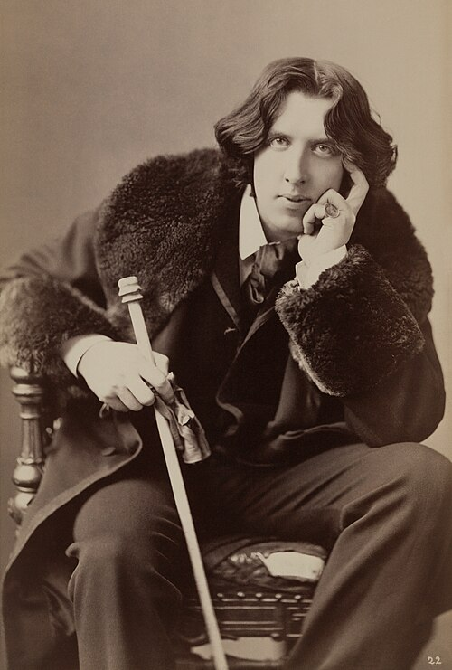

Oscar Wilde
Säihkyvä lause voi kätkeä vaikean kysymyksen.
Wilde tekee seurapiirien tavoista ja kauneuden ihanteista kirjallista leikkiä. Nokkelan pinnan alta löytyy kaipuuta, julmuutta ja tarve tulla nähdyksi.
Etsi teokset kirjastostaElämä ja teokset
Oscar Wilde syntyi Dublinissa ja opiskeli siellä sekä Oxfordissa. Hän tuli tunnetuksi kirjailijana, luennoitsijana ja taitavana keskustelijana. Hänen tuotantoonsa kuuluu runoja, satuja, esseitä ja menestyneitä näytelmiä.
Dorian Grayn muotokuva ilmestyi ensin lehdessä vuonna 1890 ja laajennettuna kirjana vuonna 1891. Se jäi Wilden ainoaksi romaaniksi. Hänen uransa katkesi vuonna 1895 vankeustuomioon homoseksuaalisista suhteista. Vankilasta vapauduttuaan hän eli Ranskassa, jossa kuoli vuonna 1900.
Tyyli ja teemat
Paradoksi pakottaa katsomaan totuttua arvoa uudesta suunnasta. Kevyt keskustelu voi paljastaa itsepetoksen ja ihailu muuttua vaaralliseksi. Wilden teksteissä kauneuden puolustus ja kauneuteen takertumisen seuraukset pysyvät kiinnostavassa ristiriidassa.
Kauneus · Naamio · Moraali
Aloita tästä
Dorian Grayn muotokuva
Nuoruutensa säilyttävän Dorianin muotokuva alkaa kantaa hänen tekojensa jälkiä. Romaani kauneudesta, vaikutusvallasta ja vastuusta.
Nokkelin puhuja ei välttämättä ole luotettavin. Vertaa lauseiden viehätystä niiden seurauksiin.